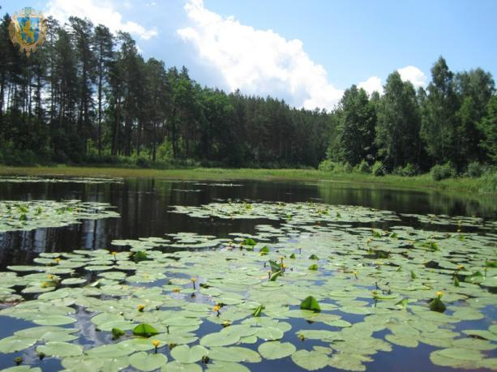

Перша новина: Відновлення природних екосистем: ключ до збереження біорізноманіття
Протягом останніх років питання збереження природних екосистем стало однією з найважливіших тем на міжнародному рівні. Відновлення деградованих територій та охорона біорізноманіття сприяють відновленню популяцій рослин і тварин, які перебували під загрозою зникнення. Це також має важливе значення для здоров'я людей, покращуючи якість повітря та води.
Таким чином, відновлення природних екосистем є однією з головних задач, яка потребує міжнародної співпраці та підтримки кожної країни.

Друга новина: Екологічні програми для збереження океанів набирають обертів
Захист океанів стає все більш пріоритетним питанням для міжнародної спільноти. Нові екологічні програми спрямовані на зменшення забруднення, збереження морського біорізноманіття та відновлення коралових рифів. Вчені та екологи наголошують на важливості цих зусиль для збереження здоров'я світових океанів та їхньої ролі у глобальній екосистемі.

Національні парки - ключові гравці у збереженні дикої природи
Національні парки відіграють важливу роль у збереженні дикої природи та біорізноманіття. Вони забезпечують захист унікальних екосистем і рідкісних видів рослин і тварин. Останні дослідження показують, що збільшення кількості та площі національних парків позитивно впливає на екологічну стабільність регіонів та сприяє розвитку екотуризму.